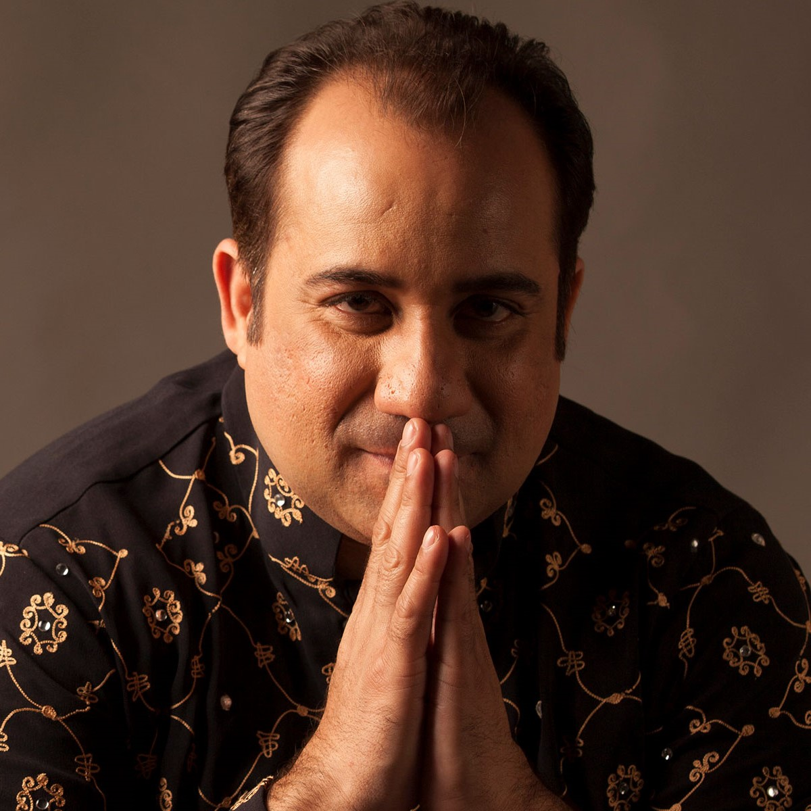

Rahat Fateh Ali Khan
About Artist
Rahat performed publicly for the first time, when he was nine, at the death anniversary of his grandfather. Since he was fifteen, he was an integral part of Nusrat Fateh Ali Khan's well-known qawwali group and toured the UK with his uncle in 1985. He also performed solo songs at different concerts, in addition to fulfilling his roles in the Quawalli group.He debuted as a playback singer in Bollywood with the movie Paap (2003), in the song "Mann Ki Lagan".
In April 2012 Rahat toured in the UK, performing at Wembley Arena and the Manchester Arena, playing to a combined audience of over 20,000 people and creating a record of maximum ticket-sales.The song "Zaroori Tha" from the album Back 2 Love (2014) became the first original non-film music video from the Indian subcontinent to cross 100 million views after two years, and 200 million views within three years of its release.
In a subordinate role with his uncle Nusrat Fateh Ali Khan, working in collaboration with Eddie Vedder, of the American rock band, Pearl Jam, Rahat contributed to the soundtrack of the 1995 Hollywood film, Dead Man Walking. In 2002, he worked on the soundtrack of The Four Feathers in collaboration with the American composer of orchestral and film music, James Horner. In 2002, Rahat guested with The Derek Trucks Band on the song "Maki Madni" for Trucks' album, Joyful Noise. In 2006, his vocals were featured on the soundtrack of Mel Gibson's Apocalypto.